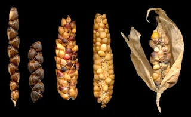
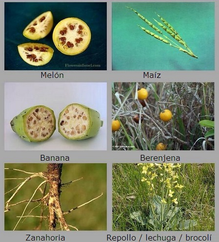

La asombrosa selección natural - Evaluación Unidad 3
Con base en la unidad 3: “De los lobos a los perros rescatistas” responde.
-
En una plantación de tomates aparece una planta cuyos frutos son de color morado. La aparición de esta variedad, que resulta ser hereditaria, se puede explicar por:
Una intervención sobrenatural.
El deseo interno de progreso del propio organismo.
A una mutación de un gen ancestral.
Al uso y desuso de las estructuras vegetales.
-
Los genetistas han encontraron que el gen RSPO2 es el responsable de que los perros tengan o no bigote y grandes cejas, rasgos que se tienen muy en cuenta para su clasificación. El FGF5 está relacionado con la longitud del pelo y el KRT71 determina si el pelo es ondulado o rizado. Es posible afirmar que las razas de perros fue posible inicialmente a…
el deseo interno de progreso de los perros.
la diversidad genética existente dentro de la población de perros.
un acto sobrenatural que eligió a los perros para ser “el mejor amigo del hombre”.
el uso que los perros hacían de sus partes que generaban una tendencia que se heredaba.
-
En ciertos casos, los seres humanos han optado por aparear a determinados animales de granja dentro de una especie. Por ejemplo, al permitir la reproducción de solamente el ganado de mayor tamaño a lo largo de muchas generaciones, se han producido razas de ganado muy grande. Este proceso se conoce como:
Selección natural.
Mutación y recombinación.
Selección artificial.
Ley del uso y el desuso.
-
¿Cuál de las siguientes opciones corresponde a una fuente de variabilidad genética en los organismos?
Clonación.
Reproducción sexual.
Reproducción asexual.
Domesticación .
-
El origen del maíz se remonta a…
las plantas de teosinte de Perú.
las plantas de Triturcum urartu en Medio Oriente.
las plantas de Triturcum urartu en Perú.
las plantas de teosinte en México.
-
El bioquímico chileno Gabriel León comentó que “hoy por hoy, casi todo lo que podemos comprar en la feria o en el supermercado [de frutas, verduras, tubérculos y cereales] fue creado por el hombre [por el proceso de selección artificial]. Una de las pocas excepciones son las nueces. Así que ya saben: si quieren comer solo cosas “naturales”, junten nueces”.
Esto permite inferir que el nogal, el árbol productor de la nuez…
no tiene variabilidad genética.
no ha sido cultivado con crianza selectiva por los humanos.
no desarrolla mutaciones
ha sido modificado al igual que el maíz.
-
Los terrier gustan de perseguir zorros, ratas y conejos aún dentro de sus madrigueras bajo tierra y darles caza, mientras que los labradores gustan de entrar al agua a recuperar aves cazadas o incluso atrapan peces grandes. Estas características de comportamiento suelen ser heredables. Esto permite afirmar que:

Están determinadas por el entrenamiento humano.
Siempre han estado en los perros.
Son de origen anterior a la domesticación de los lobos.
Están determinadas por genes.
-
En el mundo existen 5000 variedades, en Perú se encuentran alrededor de 3000. La imagen muestra una muestra de la diversidad de papas del Perú reflejada en el tubérculo.

La ventaja de preservar la diversidad genética de una especie, en este caso la papa, sería
Permitir afrontar mejor plagas o enfermedades.
Evitar que se den nuevas mutaciones.
Permitir desarrollar monocultivos.
Evitar la evolución de la especie.
-
La imagen siguiente muestra el aspecto ancestral de muchas plantas hoy domésticas.
Las diferencias que se ven en las variedades silvestres comparadas con las actuales son producto de la selección artificial. Para entender este proceso se debe tener claro que:
Las especies tienden a mejorar con el tiempo.
Las especies tienen una gran variabilidad fenotípica.
La variabilidad genética no permite la evolución.
La variabilidad genética solo se da las variedades domésticas.
-
En el caso de las plantaciones de bananos actuales, estos se siembran por esquejes, y no por semillas, ya que en la selección artificial se seleccionaron plantas con frutos más grandes ha llevado a bananas sin semillas viables. Esto permitiría suponer que en el caso de que una enfermedad atacase un cultivo de plantas reproducidas asexualmente por esquejes se diera:
Una gran resistencia a la enfermedad.
La pérdida de casi todos los individuos.
Un aumento de la diversidad genética.
Un aumento de mutaciones espontáneas.
-
Para Darwin el entender la selección artificial fue de gran importancia porque le permitió…
entender que las especies son fijas e inmutables.
entender que las especies tienen una tendencia interna a la perfección.
hacer una analogía con la selección natural, en la que el ambiente y no el hombre, determinan que individuos sobreviven y dejan más descendencia.
entender que las especies NO son entes biológicos fijos e inmutables.
Son correctas:
1 y 2
2 y 3
3 y 4
1 y 3
Componente axiológico:
En la unidad “De los lobos a los perros rescatistas” se inició con la historia de un perro abandonado llamado Turco. El tener una mascota es una cuestión de responsabilidad. ¿Qué le dirías a una persona que desea tener una mascota? ¿Qué responsabilidades se adquieren al poseer un animal de compañía? Consulta que cuidados especiales deben tenerse con perros y gatos y entrega un informe a tu docente.
Créditos de las imágenes:
Imagen 2: http://www.biodiversidad.gob.mx/usos/maices/teocintle2012.html
Imagen 3: http://www.labradoresdeabantueso.com/labrador-de-trabajo/caza.html
Imagen 4: http://heraldo21.blogspot.com/2009/05/la-papa-resumen.html#.VIC2itKG9e8
Imagen 5: http://www.bookwormroom.com/2014/06/21/saturday-afternoon-round-up-and-open-thread-2/
Comentarios
Comments powered by Disqus